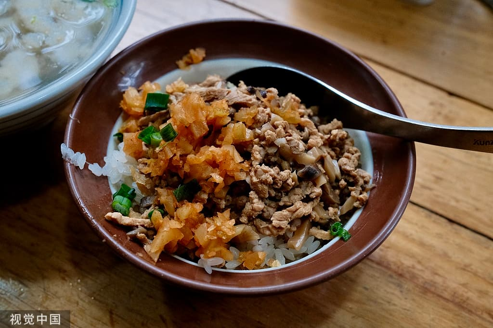
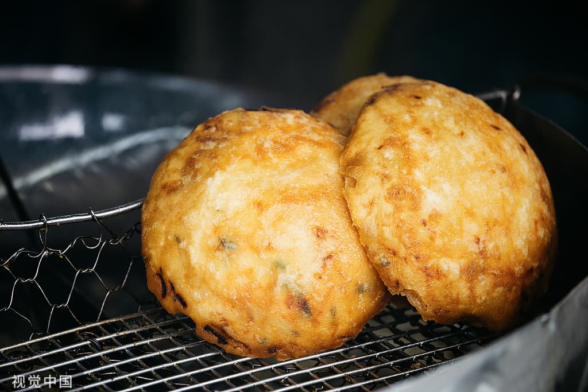
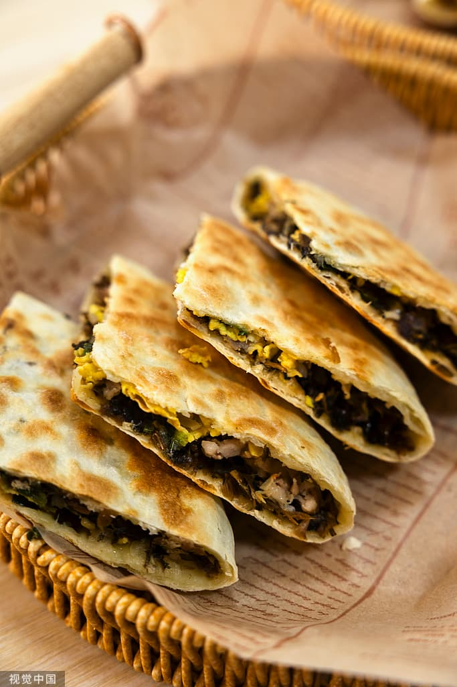
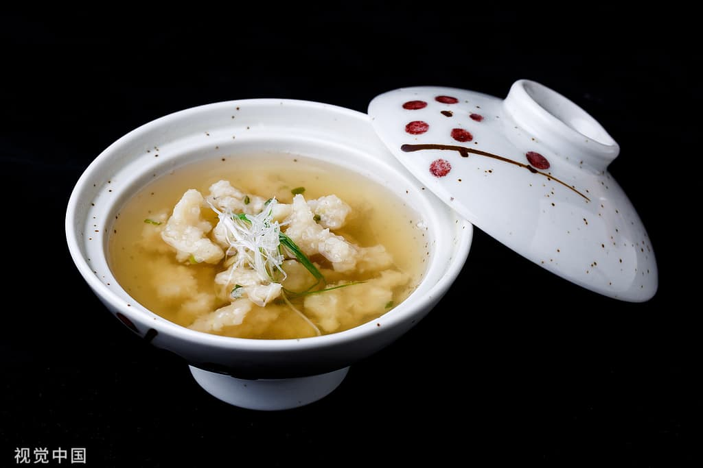
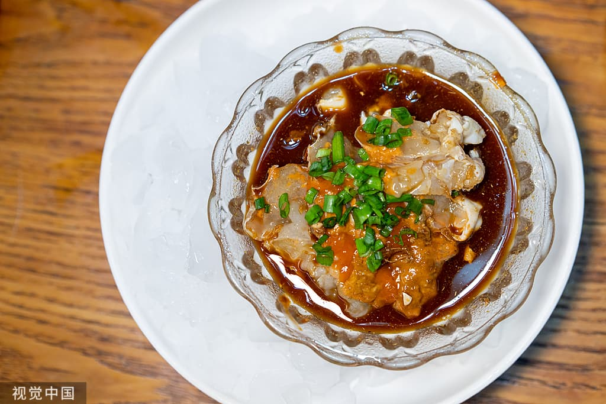
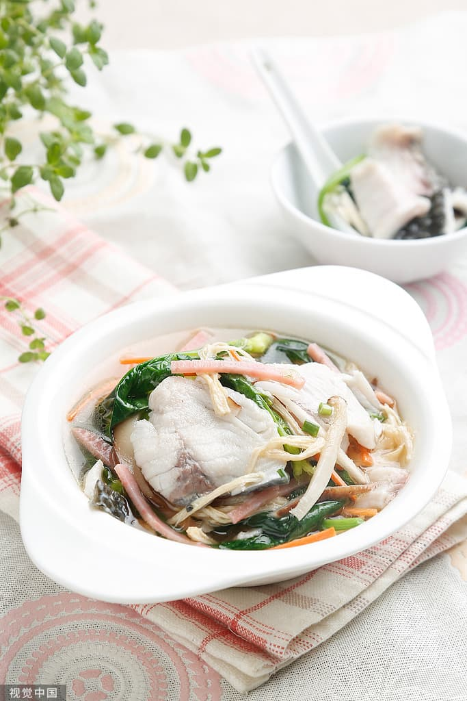
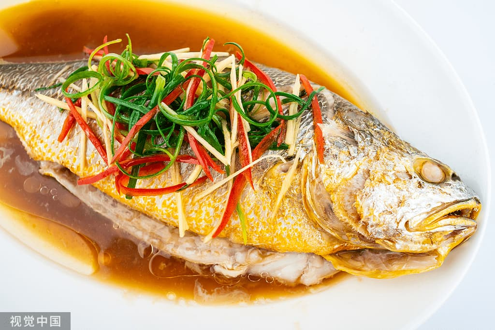

Wenzhou Sticky Rice
Sticky rice with meat sauce and fried dough crumbs. Try: Juanjuan Breakfast, Lanxiang
The tastes Wenzhou locals grow up with

Sticky rice with meat sauce and fried dough crumbs. Try: Juanjuan Breakfast, Lanxiang

Rice batter wrapped around fresh pork and radish, deep-fried. Stalls around Wuma Street

Dried mustard greens and pork, crispy outside. Yongjia Ling Shang Ren Jia, old shops d

Freshly made from minced yellow croaker, shaped into strips not balls. Old shops on Wu

Raw marinated swimming crab, a classic Ou dish. Old restaurants downtown.

Fish pounded into thin sheets, cut into strips, with ham and mushrooms. Ou cuisine res

Steamed yellow croaker with scallion oil, fresh and simple. Dongtou or sea food restaur